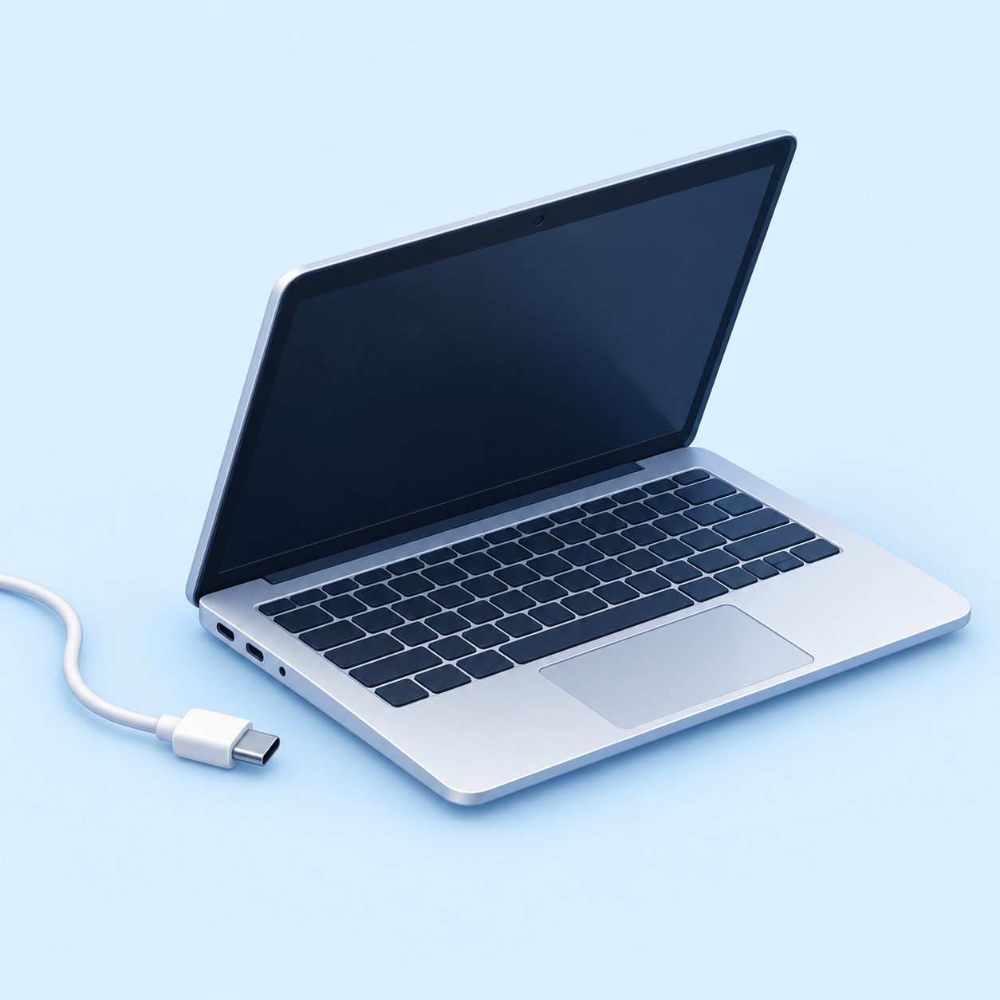
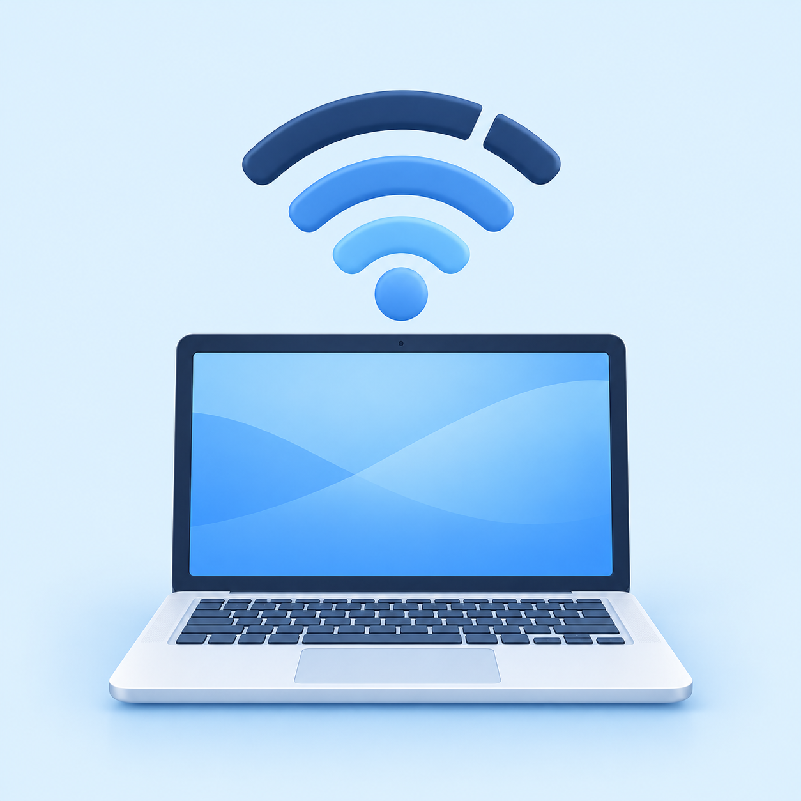
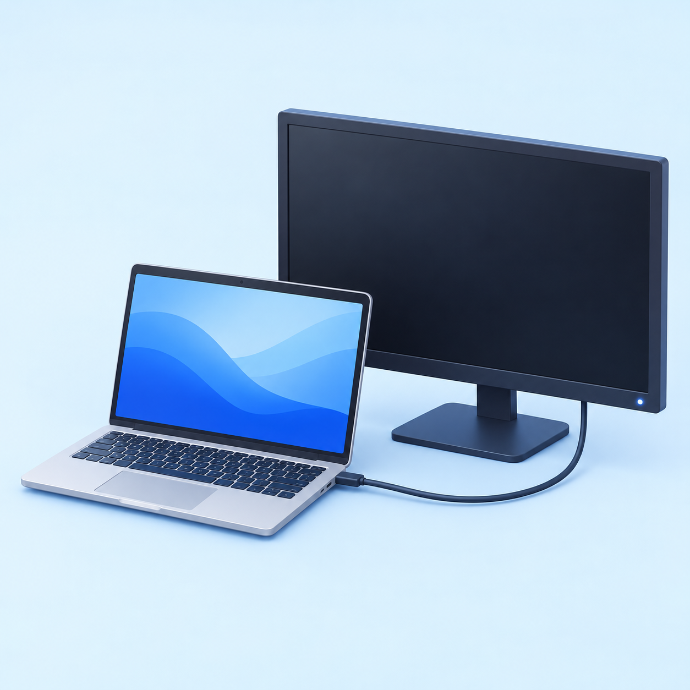

01 PC-en vil ikke starteIT-hjelp steg for steg
Oppskrifter
Velg problemet du trenger hjelp med, og følg stegene i oppskriften.

02 PC-en får ikke internett
03 Ekstern skjerm viser ikke bildePC-en vil ikke starte
- Vanskelighetsgrad
- Nybegynner
- Tidsbruk
- 5 til 15 minutter (pluss eventuell ladetid)
Trykker du på strømknappen uten at PC-en reagerer? Det betyr ikke nødvendigvis at den er ødelagt. Følg disse stegene for å finne ut hva som kan være problemet.
Steg 1: Kontroller laderen
Sjekk at laderen sitter ordentlig i både PC-en og stikkontakten. Hvis PC-en har et ladelys, se om det lyser. Prøv gjerne en annen stikkontakt dersom du ikke får noen reaksjon.
Hvorfor?
Hvis batteriet er tomt og PC-en ikke får strøm fra laderen, kan den ikke starte.
Steg 2: La PC-en lade
La PC-en stå tilkoblet laderen i 15–30 minutter. Prøv deretter å starte den igjen.
Hvorfor?
Et helt utladet batteri kan trenge litt tid før PC-en reagerer.
Steg 3: Se etter tegn til liv
Trykk på strømknappen og undersøk om du ser lys, hører vifter eller merker at skjermen reagerer.
Hvorfor?
Hvis PC-en viser tegn til oppstart, men skjermen fortsatt er svart, kan problemet være knyttet til skjermen i stedet.
Steg 4: Utfør en strømtilbakestilling
På enkelte PC-er kan du koble fra laderen og eksternt utstyr, holde strømknappen inne i 15–30 sekunder og deretter koble til laderen igjen. Sjekk produsentens instruksjoner for din modell før du gjør dette.
Hvorfor?
Strømstyringen kan noen ganger slutte å reagere. En strømtilbakestilling kan hjelpe.
Steg 5: Undersøk reset-hullet
Enkelte bærbare PC-er har et lite «emergency reset»-hull på undersiden. Kontroller i produsentens bruksanvisning om PC-en din har dette, og følg fremgangsmåten som beskrives der.
Viktig: Ikke stikk noe inn i et hull uten å være sikker på hva det brukes til.
Hvorfor?
På støttede modeller kan reset-knappen tilbakestille strømstyringen uten å slette personlige filer.
Steg 6: Kontakt IT-brukerstøtte
Hvis PC-en fortsatt ikke starter, bør du kontakte IT-brukerstøtte. Fortell hvilke steg du har prøvd og om PC-en viser noen tegn til liv.
Du har lært
Hvordan undersøke vanlige oppstartsproblemer og skille mellom problemer med strøm og skjerm.
PC-en får ikke internett
- Vanskelighetsgrad
- Nybegynner
- Tidsbruk
- 5 til 10 minutter
Er du koblet til Wi-Fi, men får ikke åpnet nettsider? Eller finner PC-en ikke nettverket i det hele tatt? Denne oppskriften hjelper deg med å finne ut hvor problemet ligger.
Steg 1: Kontroller Wi-Fi
Klikk på nettverksikonet på oppgavelinjen. Kontroller at Wi-Fi er aktivert, og at flymodus er slått av. Velg riktig nettverk og prøv å koble til.
Hvorfor?
PC-en må ha en aktiv nettverkstilkobling for å få tilgang til internett.
Steg 2: Undersøk tilkoblingsstatus
Åpne Innstillinger → Nettverk og Internett. Se om PC-en er tilkoblet, eller om Windows viser en feilmelding.
Hvorfor?
En PC kan være koblet til et trådløst nettverk uten at nettverket har internettilgang.
Steg 3: Test andre nettsider
Prøv å åpne flere forskjellige nettsider. Hvis bare én nettside ikke fungerer, kan feilen ligge hos nettsiden.
Hvorfor?
Dette hjelper deg med å finne ut om problemet gjelder hele internettforbindelsen eller bare én tjeneste.
Steg 4: Test en annen enhet
Prøv å koble telefonen til det samme Wi-Fi-nettverket og åpne en nettside.
Hvorfor?
Hvis flere enheter har samme problem, kan feilen ligge i nettverket. Hvis bare PC-en har problemer, bør du undersøke PC-ens innstillinger.
Steg 5: Start nettverkstilkoblingen på nytt
Koble fra Wi-Fi-nettverket, vent noen sekunder og koble til igjen. Hvis det ikke hjelper, kan du starte PC-en på nytt.
Hvorfor?
Dette kan løse midlertidige feil i nettverkstilkoblingen.
Steg 6: Kontakt IT-brukerstøtte
Hvis problemet fortsetter, kontakt IT-brukerstøtte. Oppgi hvilket nettverk du bruker, hvilken feilmelding du får og hvilke steg du har prøvd.
På skolens nettverk bør du ikke tilbakestille eller endre nettverksutstyr uten tillatelse.
Du har lært
Hvordan kontrollere Wi-Fi og undersøke om en nettverksfeil ligger hos PC-en, nettverket eller en bestemt nettside.
Ekstern skjerm viser ikke bilde
- Vanskelighetsgrad
- Nybegynner
- Tidsbruk
- 3 til 5 minutter
Har du koblet en ekstra skjerm til PC-en, men får bare svart skjerm eller meldingen «No Signal»? Følg denne oppskriften for å finne problemet.
Steg 1: Kontroller at skjermen er på
Undersøk om skjermen er koblet til strøm og slått på. Se etter et indikatorlys på skjermen.
Hvorfor?
En skjerm må ha strøm for å kunne vise bilde.
Steg 2: Kontroller skjermkabelen
Sjekk at HDMI-, DisplayPort- eller USB-C-kabelen sitter ordentlig i både PC-en og skjermen. Hvis du bruker en dockingstasjon, kontroller også tilkoblingen mellom PC-en og dockingstasjonen.
Hvorfor?
En løs kabel eller en tilkobling som ikke støtter videosignal, kan føre til at skjermen ikke får bilde.
Steg 3: Velg riktig inngang
Åpne skjermens meny ved hjelp av knappene på skjermen. Finn innstillingen «Input» eller «Source», og velg inngangen kabelen er koblet til, for eksempel HDMI 1.
Hvorfor?
Skjermen kan være satt til å vise signal fra en annen inngang.
Steg 4: Bruk Windows + P
Trykk på Windows-tasten + P på tastaturet. Velg «Dupliser» hvis du vil vise samme bilde på begge skjermene, eller «Utvid» hvis du vil bruke dem som to separate arbeidsområder.
Hvorfor?
Windows kan være innstilt til å bruke bare én av skjermene.
Steg 5: Finn skjermen i Windows
Åpne Innstillinger → System → Skjerm. Se om den eksterne skjermen vises. Hvis den mangler, kan du prøve funksjonen for å oppdage flere skjermer, dersom den er tilgjengelig.
Hvorfor?
Her kan du kontrollere hvordan Windows registrerer og bruker de tilkoblede skjermene.
Steg 6 – Test en annen tilkobling
Hvis skjermen fortsatt ikke fungerer, prøv en annen kompatibel kabel, port eller skjerm dersom du har tilgang til det.
Hvorfor?
Ved å bytte én ting om gangen kan du finne ut om feilen ligger i kabelen, skjermen eller PC-en.
Steg 7 – Kontakt IT-brukerstøtte
Hvis du fortsatt ikke får bilde, kontakt IT-brukerstøtte. Forklar hvilke kabler og tilkoblinger du har testet.
Du har lært
Hvordan feilsøke eksterne skjermer og bruke Windows til å konfigurere flere skjermer.